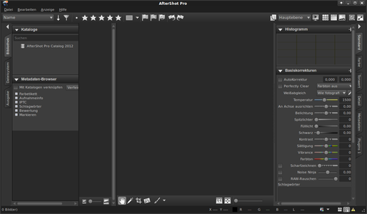
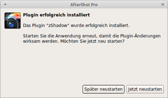

AfterShot Pro
Dieser Artikel wurde für die folgenden Ubuntu-Versionen getestet:
Ubuntu 16.04 Xenial Xerus
Ubuntu 14.04 Trusty Tahr
Zum Verständnis dieses Artikels sind folgende Seiten hilfreich:
 Corel® AfterShot™ Pro
Corel® AfterShot™ Pro  ist eine kommerzielle Software zum Verwalten, Bearbeiten, Konvertieren und Präsentieren von Digitalfotos. Intern baut man auf die Techniken und die Erfahrung der Bibble-Entwickler auf, deren Firma von Corel übernommen wurde.
ist eine kommerzielle Software zum Verwalten, Bearbeiten, Konvertieren und Präsentieren von Digitalfotos. Intern baut man auf die Techniken und die Erfahrung der Bibble-Entwickler auf, deren Firma von Corel übernommen wurde.
Das Programm unterstützt neben den Bildformaten JPEG und TIFF auch diverse RAW-Formate: ARW, CR2, CRW, DCR, MRW, NEF, NRW, ORF, PEF, RAW, RW2, RWL und SR2. Eine aktuelle Liste der unterstützten Kameramodelle ist bei Corel einzusehen. Das Programm kann u.a. EXIF-Daten schreiben. Seit Ende Mai 2014 steht der Nachfolger Aftershot Pro 2 bereit.
Freie Alternativen sind die Anwendungen RawTherapee und Darktable.
|  |
| Hauptfenster |
Installation¶
Mittlerweile ist neben Version 2 auch Version 3 erschienen. Letztere läuft nur noch unter 64-Bit-Systemen. Für Ubuntu 16.04 muss vorher noch das folgende Paket installiert werden:
libgstreamer-plugins-base0.10-0
 mit apturl
mit apturl
Paketliste zum Kopieren:
sudo apt-get install libgstreamer-plugins-base0.10-0
sudo aptitude install libgstreamer-plugins-base0.10-0
Vollversion¶
Das Programm von corel.com  in der gewünschten Architektur herunterladen und installieren [1].
in der gewünschten Architektur herunterladen und installieren [1].
Nach der Installation kann die Fotosoftware über "Anwendungen -> Grafik -> Corel AfterShop Pro" gestartet werden.
Beim Start des Programms die Daten der Registrierungs-E-Mail eingeben. Im Homeverzeichnis legt das Programm den versteckten Ordner ~/.AfterShotPro/ an.
Testversion¶
Die Testversion wird wie die Vollversion aufgespielt [1]. Sie bietet für 30 Tage den vollen Funktionsumfang und kann später freigeschaltet werden.
Konfiguration¶
Über "Datei -> Einstellungen..." erreicht man die Einstellungen des Programms. Viele Merkmale können konfiguriert werden - eine genaue Beschreibung der einzelnen Einstellungsmöglichkeiten ist dem Handbuch zu entnehmen:
| Einstellungen | |
| Menüpunkt | Beschreibung |
| "Allgemein" | Allgemeine Grundeinstellungen vornehmen - unter anderem zu Sprache und Speicherpfaden. |
| "Anzeige" | Anzeigeeinstellungen zu Meta-Daten, Darstellung ... verändern. |
| "Farbmanagement" | Zu verwendende Farbprofile (Monitor, jpg-Datei,...). |
| "Import & Cache" | Größe des verwendeten Cache anpassen sowie Einstellungen für den Import einiger Kameramodelle. |
| "Benennen" | Namensformate. |
| "Sequenzen" | Sequenzen |
| "Tastatur" | Tastenkürzel können eingesehen und angepaßt werden. |
| "Soft-Proof" | Soft-Proof-Farbprofile |
| "Guppen kopieren" | Tastenkürzel für Metadaten, Belichtung, ... |
| "Standardeinstellungen" | Name der Standardeinstellungen |
| "Beschneiden" | Verhalten des Werkzeugs verändern. |
| "Externer Editor" | Alternativen Editor (z.B. GIMP) zur externen Bearbeitung angeben und konfigurieren. |
| "Leistung" | An der Leistung herumschrauben. |
Erweiterungen¶
|  |
| Erweiterung |
Erweiterungen sind kein offizieller Bestandteil des Programms, sondern stellen die Arbeit von Drittentwicklern dar und müssen daher unter Umständen separat erworben werden. Auf der Internetseite AfterShot Pro - Plugins  befindet sich eine Liste der verfügbaren Erweiterungen. Diese tragen die Dateiendung .afzplug. Nachdem die gewünschte Erweiterung heruntergeladen wurde, diese über den Dialog "Datei -> Plugin installieren..." einspielen. Anschließend muss die Anwendung neu gestartet werden, damit die Erweiterungen verwendet werden können.
befindet sich eine Liste der verfügbaren Erweiterungen. Diese tragen die Dateiendung .afzplug. Nachdem die gewünschte Erweiterung heruntergeladen wurde, diese über den Dialog "Datei -> Plugin installieren..." einspielen. Anschließend muss die Anwendung neu gestartet werden, damit die Erweiterungen verwendet werden können.
Handbuch¶
Für die Verwendung der Software stehen zwei Anleitungen zur Verfügung:
Schnellstart
im PDF-FormatHandbuch
im PDF-Format
Problembehebung¶
Sprache¶
Über "File -> Preferences -> General" wählt man beim Punkt "Language" als Sprache "German" aus.
64-Bit¶
Ab Ubuntu 13.10 ist das zur Installation unter 64-bit-Systemen erforderliche Paket ia32-libs nicht mehr in den offiziellen Paketquellen vorhanden. Bis der Hersteller ein korrigiertes Paket bereit stellt, ist die Installation daher nicht mehr möglich.
Ubuntu 16.04¶
Mitunter kann aufgrund fehlender Abhängigkeiten eine Installation mit Ubuntu Software nicht möglich sein. Abhilfe schafft die Installation mittels gdebi, welches Erforderliches nachlädt.
Ubuntu 16.10¶
AfterShot Pro nutzt das ältere Ausgabe GStreamer-0.10 des Multimedia-Frameworks GStreamer, während bereits ab Ubuntu 14.04 das neuere GStreamer-1.0 vorinstalliert ist. Daher wurde GStreamer-0.10 ab Ubuntu 16.10 aus den offiziellen Paketquellen entfernt.
Es werden nicht alle Bilder im gewählten Verzeichnis angezeigt¶
In dem Falle hilft es, den gesamten Cache unter ~/.AfterShotPro/cache/ zu löschen.
Fehlendes Kameraprofil¶
Bei einigen Kameras muss das Kameraprofil der genutzten Kamera eigens von Kameraprofile {} heruntergeladen und installiert werden, sonst können deren Bilder nicht angesehen werden.
Infobox¶
| Corel® AfterShot™ Pro | |
| Sprache: |     |
| Veröffentlichung: | 2012 (Afershot Pro) / 2014 (Aftershot Pro 2) |
| Publisher: | Corel® |
| Systemvoraussetzungen: | Intel® Pentium® 4 oder AMD Athlon™ 64 / 2GB RAM / 250 MB Festplattenspeicher |
| Medien: | Download / CD-ROM (1) |
| Strichcode / EAN / GTIN: | - |
| Läuft mit: | nativ |
Links¶
Corel® AfterShot™ Pro: Professionelle Bildbearbeitungs-Software - auch nativ für Linux
- Blogbeitrag 01/2012Grafik
 Übersichtsseite
Übersichtsseite
- Erstellt mit Inyoka
-
 2004 – 2017 ubuntuusers.de • Einige Rechte vorbehalten
2004 – 2017 ubuntuusers.de • Einige Rechte vorbehalten
Lizenz • Kontakt • Datenschutz • Impressum • Serverstatus -
Serverhousing gespendet von